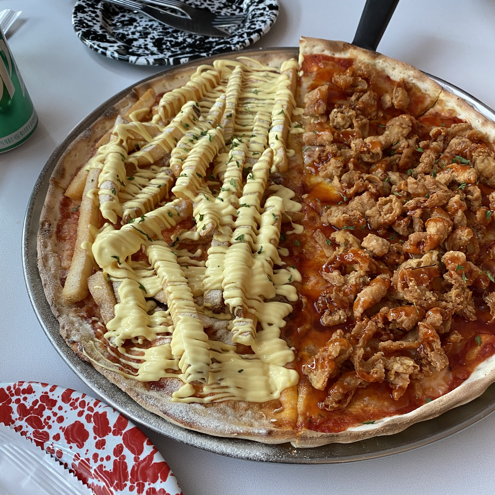
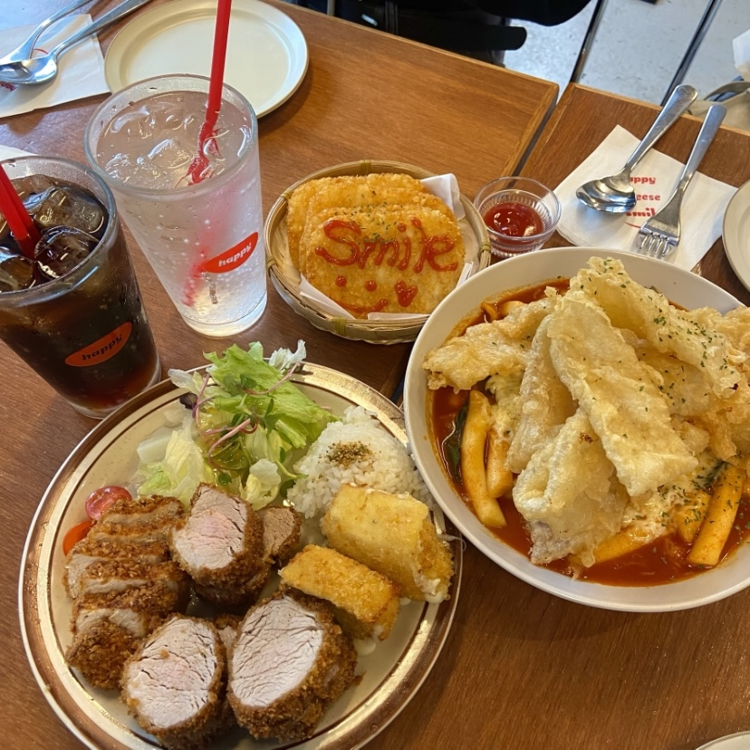
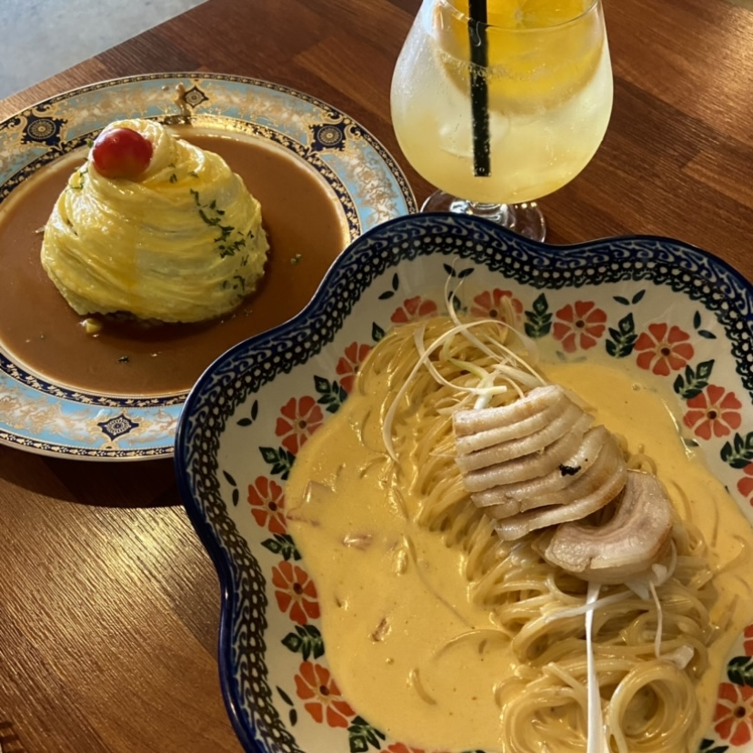
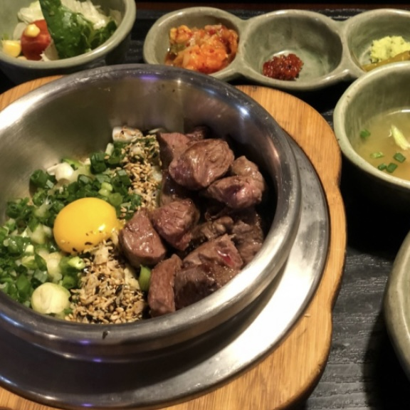
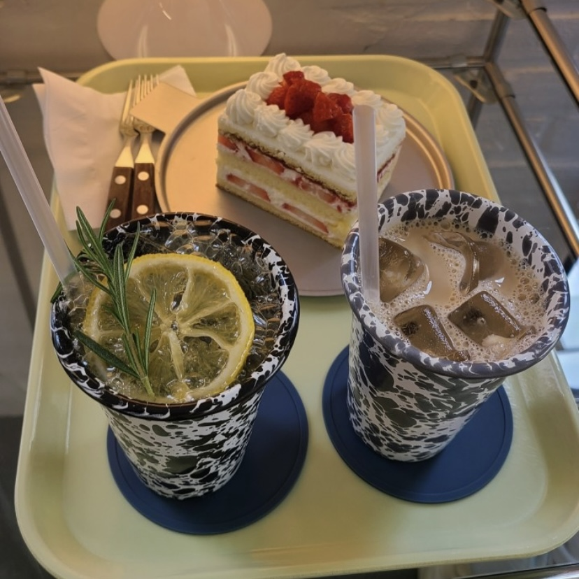
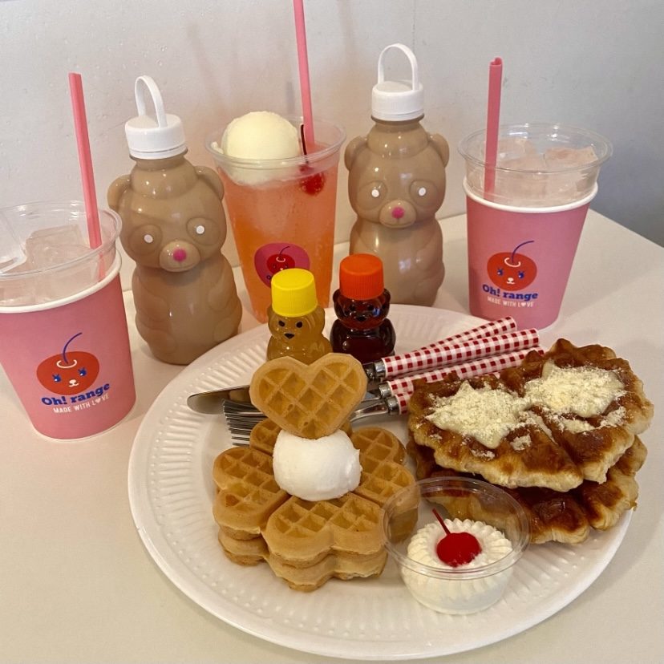
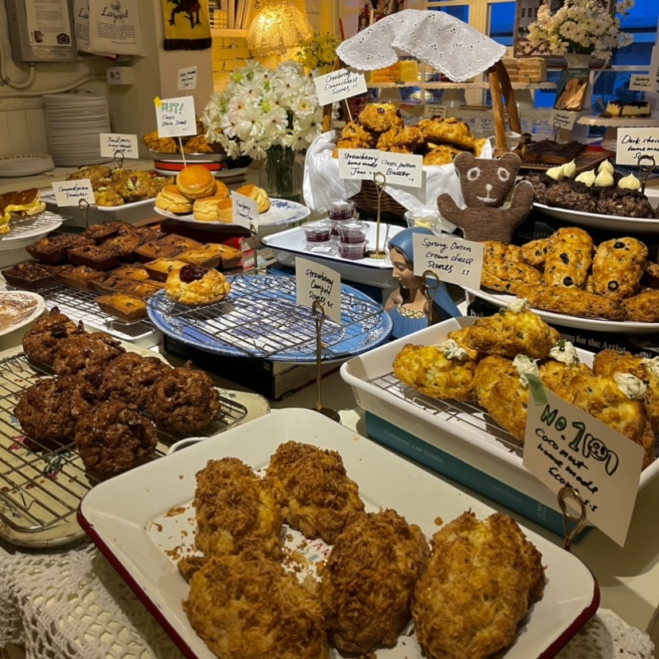
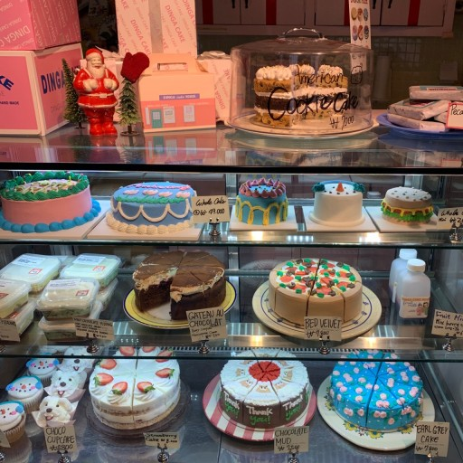

ㅣ연남동ㅣ
제가 직접 돌아다니며 먹은
연남동 맛집을 소개하려 합니다.
연남동에서 어디 갈지 고민이라면 참고해보세요! :)
Yeonnam-dong Food
연남동에서 먹기 좋은 음식점
-

- 랫댓
- [피자]
- 연남동에서 유명한 피자 가게
반반 피자가 유명하며, 그 중애서
감자튀김 피자와 닭껍질 피자가
유명해요. 예절샷 성지...
- 랫댓
-

- 해피치즈스마일
- [떡볶이,돈까스]
- 떡볶이와 돈까스를 같이 파는 가게
사이드 메뉴로는 중국당면 튀김이 유명해요.
세트 구성도 괜찮아서 세트 메뉴 추천!
이 가게도 예절샷 성지...
- 해피치즈스마일
-

- 연남취향
- [양식]
-
분위기 괜찮은 양식집
파스타가 맛있어요.
메뉴가 다양해서 좋아요.
다만 가격대가 조금 있는 편!
- 연남취향
-

- 솥솥 연남점
- [한식]
- 솥밥으로 유명한 맛집
이 중에서 가장 웨이팅이 길어요.
스테이크 솥밥이 유명해요
한식이라 든든해서 좋아요!
- 솥솥 연남점
Yeonnam-dong dessert
연남동에서 먹기 좋은 디저트
-

- 플루프커피
- [인테리어,케이크]
- 깔끔한 인테리어와 예쁜 패턴의 컵이
잘 어우러져 감성 카페 느낌이에요.
케이크와 크로플 등 종류도 다양하고
맛도 있는 카페입니다 :)
- 플루프커피
-

- 오랑지
- [아기자기한 디저트]
- 웨이팅이 긴 디저트 카페..
계절이나 시즌마다 디저트가 달라져요.
사장님이 정말 친절하시고 인테리어가 귀엽다..
웨이팅이 있으니 없는 시간에 잘 맞춰 가세요!
- 오랑지
-

- 카페 레이어드 연남점
- [다양한 디저트]
- 들어가는 순간 많은 디저트들이 반기는 곳
디저트가 노출 되어 있어서
위생상 신경 쓰일 수 있어요.
종류가 다양하고 2층짜리 카페라서
답답하지 않아 좋아요!
- 카페 레이어드 연남점
-

- 딩가케이크
- [귀여운 인테리어, 케이크]
- 외관부터 동화같은 비주얼에 카페
케이크도 정말 귀엽게 생겼고 맛도 좋아요
이 카페도 2층짜리라 답답하지 않아요
전체적으로 빈티지한 느낌!
- 딩가케이크
Location
소개한 모든 맛집의 위치를 한 눈에 볼 수 있습니다.